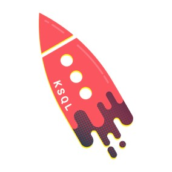

Problem
Modern data architectures require a different approach to data integration to manage the ever increasing data across various silos within the organization. For decades, the automation of business analytics relied on predictable, well-defined data sets used in predictable, well-defined ways. But today’s data is highly unpredictable and data producers and consumers find it difficult to stay in sync within the organization
DataOps helps you tease order and discipline out of the chaos and solve the big challenges to turning data into business value. It is a set of practices and technologies that operationalize data management and integration to ensure resiliency and agility in the face of constant change.
Challenges
- Building enterprise datalakes by connecting various data source
- Processing large volumes of realtime data and applying transformations and enriching to make it more usable
Tools
-
ReactJS
-

Ruby on Rails
-
Apache Kafka
-
Kafka Connect
-

Confluent KSQL
-

Apache Beam
-

Google Cloud Dataflow
-

Apache Spark
-
Spark ML
-
Spark Packages
Solution
- Data Platform user interface to configure and deploy your pipeline
- Kafka Connect used to read|write data from|to different data sources
- Spark packages used to read|write data from|to different data sources
- Apache Beam IOs used to read|write data from|to different data sources
- Transformation, enrichment tasks to run on the pipeline
- Implemented MySQL connector to read|write records from|to MySQL
- Implemented PostgreSQL connector to read|write records from|to PostgreSQL
- Implemented SFTP connector to read|write records from|to SFTP
- Implemented Salesforce connector to read|write records from|to Salesforce
- Implemented Kafka Firebird connector to read|write records from|to Firebird DB
- Implemented Tableau connector to write records to Tableau
- Implemented Azure Blob Storage connector to read|write records from|to Azure Blob Storage
- Implemented Azure Data Lake Storage connector to read|write records from|to Azure Data Lake Storage